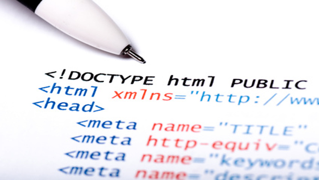
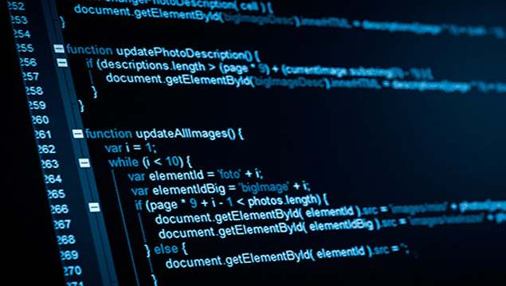

- 
- 

TEMATICA DE LA WEB
Este WEB, esta diseñada para el aprendizaje inicial del desarrollo del software. aqui podemos conocer las etapas del desarrollo del SOFTWARE, sus herramienta, Fases, procesos y modelos entre otros. Asi que gocen del aprendizaje que esta WEB ofrece y no cierren sus conocimientos en lo que aduqieran aqui, exploren, conozcan, innoven, y creen sus propios diseños.
IMPORTANCIA DEL DISEÑO WEB
En la actualidad en el proceso de desarrollo de software se sugiere involucrar a los
usuarios potenciales con el objetivo de obtener un producto que satisfaga las
expectativas que emergen de las necesidades de ellos; por esto, en la construcción de
herramientas computacionales con orientación didáctica es relevante considerar las
habilidades de los estudiantes, así como definir en lo posible el estilo de aprendizaje
con el que se identifican y con esta información planificar actividades que integren
aspectos que propicien una mejor comprensión del tema o curso que se desea apoyar.
Con la incorporación de las computadoras en el entorno educativo, los usuarios –tanto
docentes como alumnos- han ampliado sus expectativas alrededor de lo que, como
herramientas de apoyo éstas pueden ofrecer. Las actividades en las que se aplica esta
tecnología van desde los procesadores de texto, elaboración de presentaciones, hasta
llegar a software con especifico para a un curso o tema, presentándose ya sea a manera
de tutorial, simuladores e incluso contar con sistemas de evaluación. En la construcción
del software educativo (SE) se deben considerar por una parte las etapas de desarrollo
de software y por otra la elaboración de un guión de contenidos que, en conjunto con la
herramienta técnica propiamente dicha, sea de utilidad a los alumnos. Los siguientes
apartados describen la integración de elementos del área de la ingeniería de software
(IS) y del conocimiento para la construcción de un SE orientado a atender los problemas
conceptuales a la hora de desarrollar software teniendo como metodología a Iconix. En
particular la herramienta aborda el modelo de dominio y diagrama de clases la vista
estática de Iconix